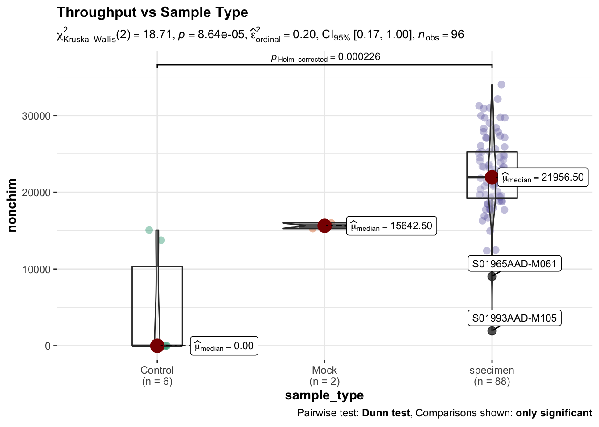

Last updated: 2022-04-12
Checks: 7 0
Knit directory: UAB_LLops/
This reproducible R Markdown analysis was created with workflowr (version 1.7.0). The Checks tab describes the reproducibility checks that were applied when the results were created. The Past versions tab lists the development history.
Great! Since the R Markdown file has been committed to the Git repository, you know the exact version of the code that produced these results.
Great job! The global environment was empty. Objects defined in the global environment can affect the analysis in your R Markdown file in unknown ways. For reproduciblity it’s best to always run the code in an empty environment.
The command set.seed(20220310) was run prior to running the code in the R Markdown file. Setting a seed ensures that any results that rely on randomness, e.g. subsampling or permutations, are reproducible.
Great job! Recording the operating system, R version, and package versions is critical for reproducibility.
Nice! There were no cached chunks for this analysis, so you can be confident that you successfully produced the results during this run.
Great job! Using relative paths to the files within your workflowr project makes it easier to run your code on other machines.
Great! You are using Git for version control. Tracking code development and connecting the code version to the results is critical for reproducibility.
The results in this page were generated with repository version be7475e. See the Past versions tab to see a history of the changes made to the R Markdown and HTML files.
Note that you need to be careful to ensure that all relevant files for the analysis have been committed to Git prior to generating the results (you can use wflow_publish or wflow_git_commit). workflowr only checks the R Markdown file, but you know if there are other scripts or data files that it depends on. Below is the status of the Git repository when the results were generated:
Ignored files:
Ignored: .DS_Store
Ignored: .Rhistory
Ignored: .Rproj.user/
Ignored: analysis/.DS_Store
Ignored: analysis/Exploratory_v1.Rmd
Ignored: analysis/Osos_v1.Rmd
Ignored: analysis/Osos_vs_lobos_v1.Rmd
Ignored: analysis/_book/
Ignored: analysis/_main.Rmd
Ignored: analysis/figure/
Ignored: code/.DS_Store
Ignored: code/100_Report_v1.2.Rmd
Ignored: code/myFunctions.R
Ignored: data/.DS_Store
Ignored: data/processed/
Ignored: data/ps_silva.rds
Ignored: data/ps_silva_RR.rds
Ignored: data/raw/
Ignored: output/Deliverables/
Ignored: output/boxplots/
Note that any generated files, e.g. HTML, png, CSS, etc., are not included in this status report because it is ok for generated content to have uncommitted changes.
These are the previous versions of the repository in which changes were made to the R Markdown (analysis/index.Rmd) and HTML (docs/index.html) files. If you’ve configured a remote Git repository (see ?wflow_git_remote), click on the hyperlinks in the table below to view the files as they were in that past version.
| File | Version | Author | Date | Message |
|---|---|---|---|---|
| Rmd | be7475e | Marc Noguera-Julian | 2022-04-12 | workflowr::wflow_publish(all = T) |
| html | 1868595 | Marc Noguera-Julian | 2022-04-12 | init report |
| Rmd | 157f3a5 | Marc Noguera-Julian | 2022-03-10 | Start workflowr project. |
Propuesta de análisis de datos de microbioma fecal por 16s en estudio exploratorio de fauna salvaje
Codigo TreeTopUnder: UABLlops-16S
Cliente:
El objetivo del estudio es caracterizar el microbioma fecal de fauna salvaje (osos y lobos)
Los datos crudos recibidos (formato FASTQ) se han obtenido usando un dieseño de amplicon unico en la region 16S del gen del RNA ribosomico (rDNA), amplificando la sub-region variable V3-V4 mediante PCR y usando secuenciación de última generación (Illumina/MiSeq) sobre las librerias obtenidas. Asi, las lecturas crudas obtenides tienen una longitud de 300 nt en un esquema paired-end (300 nt en lecturas forward y 300 nt en lecturas en reverse) sobre un amplicon de entre 450 y 500 nt, por lo que las lecturas forward y reverse tienen cierto grado de solapamiento que se usa para mejorar la calidad de los datos. En base a los datos crudos obtenidos de muestras orales (saliva) de los pacientes se ha realizado el análisis de secuencia dentro del framework R::DADA2. Este software nos permite obtener secuencias exactas de las variantes estudiadas (Amplicon Sequence Variants o ASV) y una informació de contaje y asignación taxonómica de cada una de ellas. El proceso de análisi se secuencia se divide en los siguientes pasos:
De esta forma, obtenemos un paquete de datos que contiene entidades ASV representativas de los diferentes taxones bacterianos presentes en la muestra y, para cada muestra, valores de contaje cuantitativo de cada uno de estos taxones. Ademas, obtenemos la distancia genética entre pares de taxones que nos permitirá calcular indiced de similitud entre las muestras.
El numero de secuencias obtenidas para este proceso, después de todos los pasos de proceso y control de calidad debe ser suficiente para cada muestra para poder caracterizar el microbioma de la muestra.
Se usan estimadores Chao1 y Shannon para quantificar los paramteros de riqueza y diversidad de la muestra(alpha-diversity). Se usan tests no-parametricos para comparar parametros de alfa-diversidad y beta-diversidad entre grupos formados por las variables de interés. Se usan estimadores Chao1 y Shannon para quantificar los paramteros de riqueza y diversidad de la muestra(alpha-diversity). Se usa distancia WUnifrac para calcular similitud entre la composición de las muestras (Beta-diversity). Se usan non-metric dimensional scaling (NMDS) para el análisis de ordenacion basandose en la distancia WUnifrac. Se usa el paquete lefser para determinar generos bacterianos diferencialmente abundantes entre grupos formados por las variables de interés.
| input | filtered | denoised | merged | tabled | nonchim | |
|---|---|---|---|---|---|---|
| S01926AAD-M006 | 1e+05 | 88409 | 86360 | 85556 | 85556 | 23098 |
| S01927AAD-M007 | 1e+05 | 85538 | 84319 | 83781 | 83781 | 19450 |
| S01928AAD-M008 | 1e+05 | 88781 | 87366 | 85434 | 85434 | 12483 |
| S01929AAD-M012 | 1e+05 | 86850 | 85858 | 85219 | 85219 | 24228 |
| S01930AAD-M013 | 1e+05 | 88980 | 88234 | 87899 | 87899 | 20750 |

| Version | Author | Date |
|---|---|---|
| 1868595 | Marc Noguera-Julian | 2022-04-12 |
Deliverables: FinalMetadata.xls y 16SDataAvailability.xls
Cada uno de los ficheros FASTQ esta identificado con un código del formato 01930AAD-M013 que identifica una muestra de heces. Existen datos de secuenciación para 96 muestras de heces recogidas durante el trabajo de campo. Se proporcionan metadatos para 96 identificadores muestra de heces esta ligada a un Code que identifica la muestra y un Individuo que identifica al animal del que se han obtenido las heces. Además, para cada muestra se dispone de las siguientes variables:
De las 96 muestras disponibles, 8 muestras pertenecen a controles que no se usaran para el análisis mas alla del control de calidad:
En el dataset resultante, se usaran exclusivamente las ASV anotadas taxonómicamente a Bacteria o Arqueas (Kingdom = Archaea o Kingdom = Bacteria)
Las caracteristicas del dataset a analizar son:
phyloseq-class experiment-level object
otu_table() OTU Table: [ 3196 taxa and 89 samples ]
sample_data() Sample Data: [ 89 samples by 24 sample variables ]
tax_table() Taxonomy Table: [ 3196 taxa by 6 taxonomic ranks ]
phy_tree() Phylogenetic Tree: [ 3196 tips and 3194 internal nodes ]
sessionInfo()R version 4.1.1 (2021-08-10)
Platform: x86_64-apple-darwin17.0 (64-bit)
Running under: macOS Big Sur 10.16
Matrix products: default
BLAS: /Library/Frameworks/R.framework/Versions/4.1/Resources/lib/libRblas.0.dylib
LAPACK: /Library/Frameworks/R.framework/Versions/4.1/Resources/lib/libRlapack.dylib
locale:
[1] en_US.UTF-8/en_US.UTF-8/en_US.UTF-8/C/en_US.UTF-8/en_US.UTF-8
attached base packages:
[1] stats graphics grDevices utils datasets methods base
other attached packages:
[1] forcats_0.5.1 stringr_1.4.0 dplyr_1.0.8 purrr_0.3.4
[5] readr_2.1.2 tidyr_1.2.0 tibble_3.1.6 ggplot2_3.3.5
[9] tidyverse_1.3.1 phylosmith_1.0.6 here_1.0.1 pander_0.6.5
[13] phyloseq_1.38.0 workflowr_1.7.0
loaded via a namespace (and not attached):
[1] utf8_1.2.2 tidyselect_1.1.2 grid_4.1.1
[4] gmp_0.6-4 Rtsne_0.15 munsell_0.5.0
[7] codetools_0.2-18 effectsize_0.6.0.1 units_0.8-0
[10] withr_2.5.0 colorspace_2.0-3 Biobase_2.54.0
[13] highr_0.9 knitr_1.37 rstudioapi_0.13
[16] stats4_4.1.1 ggsignif_0.6.3 labeling_0.4.2
[19] git2r_0.30.1 GenomeInfoDbData_1.2.7 polyclip_1.10-0
[22] farver_2.1.0 datawizard_0.3.0 rhdf5_2.38.0
[25] rprojroot_2.0.2 vctrs_0.3.8 generics_0.1.2
[28] xfun_0.30 BWStest_0.2.2 R6_2.5.1
[31] GenomeInfoDb_1.30.1 graphlayouts_0.8.0 bitops_1.0-7
[34] rhdf5filters_1.6.0 cachem_1.0.6 reshape_0.8.8
[37] assertthat_0.2.1 promises_1.2.0.1 scales_1.1.1
[40] ggraph_2.0.5 gtable_0.3.0 multcompView_0.1-8
[43] processx_3.5.2 tidygraph_1.2.0 rlang_1.0.2
[46] zeallot_0.1.0 PMCMRplus_1.9.3 splines_4.1.1
[49] prismatic_1.1.0 broom_0.7.12 yaml_2.3.5
[52] reshape2_1.4.4 modelr_0.1.8 backports_1.4.1
[55] httpuv_1.6.5 RMySQL_0.10.23 tools_4.1.1
[58] logging_0.10-108 ellipsis_0.3.2 jquerylib_0.1.4
[61] biomformat_1.22.0 RColorBrewer_1.1-2 proxy_0.4-26
[64] BiocGenerics_0.40.0 WRS2_1.1-3 Rcpp_1.0.8.3
[67] plyr_1.8.6 zlibbioc_1.40.0 classInt_0.4-3
[70] RCurl_1.98-1.6 ps_1.6.0 viridis_0.6.2
[73] correlation_0.8.0 S4Vectors_0.32.3 haven_2.4.3
[76] ggrepel_0.9.1 cluster_2.1.2 fs_1.5.2
[79] magrittr_2.0.2 data.table_1.14.2 reprex_2.0.1
[82] mvtnorm_1.1-3 whisker_0.4 hms_1.1.1
[85] patchwork_1.1.1 evaluate_0.15 readxl_1.3.1
[88] IRanges_2.28.0 gridExtra_2.3 compiler_4.1.1
[91] ggstatsplot_0.9.1 KernSmooth_2.23-20 crayon_1.5.0
[94] htmltools_0.5.2 mgcv_1.8-39 mc2d_0.1-21
[97] later_1.3.0 tzdb_0.2.0 RcppParallel_5.1.5
[100] kSamples_1.2-9 lubridate_1.8.0 DBI_1.1.2
[103] SuppDists_1.1-9.7 tweenr_1.0.2 dbplyr_2.1.1
[106] MASS_7.3-55 sf_1.0-7 boot_1.3-28
[109] Matrix_1.4-0 ade4_1.7-18 permute_0.9-7
[112] cli_3.2.0 parallel_4.1.1 insight_0.16.0
[115] igraph_1.2.11 pkgconfig_2.0.3 getPass_0.2-2
[118] statsExpressions_1.3.0 xml2_1.3.3 paletteer_1.4.0
[121] foreach_1.5.2 bslib_0.3.1 multtest_2.50.0
[124] XVector_0.34.0 rvest_1.0.2 callr_3.7.0
[127] digest_0.6.29 parameters_0.17.0 vegan_2.5-7
[130] Biostrings_2.62.0 rmarkdown_2.13 cellranger_1.1.0
[133] lifecycle_1.0.1 nlme_3.1-155 jsonlite_1.8.0
[136] modules_0.10.0 Rhdf5lib_1.16.0 viridisLite_0.4.0
[139] fansi_1.0.2 pillar_1.7.0 lattice_0.20-45
[142] fastmap_1.1.0 httr_1.4.2 survival_3.3-1
[145] glue_1.6.2 bayestestR_0.11.5 iterators_1.0.14
[148] ggforce_0.3.3 class_7.3-20 stringi_1.7.6
[151] sass_0.4.0 performance_0.8.0 rematch2_2.1.2
[154] memoise_2.0.1 Rmpfr_0.8-7 e1071_1.7-9
[157] ape_5.6-2